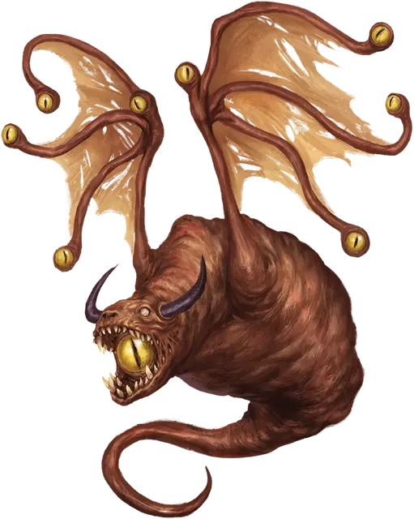

Глазодрейк
Eyedrake
Большая Аберрация, законно-злая

Класс Доспеха 16 (природный доспех)
Хиты 119 (14к10 + 42)
Скорость 0 футов, летая 30 футов (парит)
| мод | спас | ||
|---|---|---|---|
| СИЛ | 16 | +3 | +3 |
| ЛОВ | 10 | +0 | +0 |
| ТЕЛ | 16 | +3 | +6 |
| мод | спас | ||
|---|---|---|---|
| ИНТ | 14 | +2 | +2 |
| МДР | 14 | +2 | +5 |
| ХАР | 16 | +3 | +3 |
Навыки Восприятие +8, Скрытность +6
Иммунитет к состояниям сбивание с ног
Чувства тёмное зрение 120 футов, пассивное Восприятие 18
Языки Глубинная речь, Драконий
Опасность 8 (3900 опыта)
Бонус мастерства +3
Особенности
Необычная природа. Глазодрейк не нуждается в еде или воде.
Действия
Укус. . Рукопашная атака оружием: +6 к попаданию, досягаемость 10 футов, одна цель. Попадание: 13 (3к6 +3) колющего урона.
Дыхание антимагией (перезарядка 6). Глазодрейк испускает магическую волну в 30-футовом конусе. Все существа в этой области должны совершить спасбросок Телосложения Сл 14, получая 39 (6к12) урона силовым полем при провале или половину урона при успехе. Любое заклинание 3-го уровня или ниже оканчивается на существах и объектах, выбранных глазодрейком в этой области.
Лучи из глаз. Глазодрейк испускает три магических луча из глаз, выбранных случайным образом (перебрасывая повторяющиеся результаты), выбирая от одной до трех целей, видимых в пределах 60 футов:
• 1. Замораживающий луч. Цель должна совершить спасбросок Телосложения Сл 14. При провале цель получает 17 (5к6) урона холодом, и её скорость уменьшается вдвое до конца своего следующего хода. При успешном спасброске цель получает половину урона без каких-либо дополнительных эффектов.
• 2. Изнуряющий луч. Цель должна преуспеть в спасброске Телосложения Сл 14, иначе получит 7 (2к6) урона электричеством и становится недееспособной до конца своего следующего хода.
• 3. Луч отталкивания. Цель должна преуспеть в спасброске Силы Сл 14, иначе получит 14 (4к6) урона силовым полем и отбрасывается на расстояние до 60 фт. от Глазодрейка.
• 4. Огненный луч. Цель должна совершить спасбросок Ловкости Сл 14, получая 21 (6к6) урона огнём при провале или половину урона при успехе.
• 5. Парализующий луч. Цель должна преуспеть в спасброске Телосложения Сл 14, иначе станет парализованной на 1 минуту. Цель может повторять спасбросок в конце каждого своего хода, оканчивая на себе эффект при успехе.
• 6. Луч смерти. Цель должна совершить спасбросок Ловкости Сл 14, получая 28 (8к6) урона некротической энергией при провале или половину урона при успехе. Цель умирает, если луч уменьшает ее хиты до 0.
Описание
Когда бехолдер [beholder] борется с драконом за власть и богатство, его мысли о сопернике-драконе могут стать глубоко навязчивыми, в конечном счете пронизывая сны бехолдера [beholder]. Если соперничество продлится достаточно долго, эти лихорадочные сны могут проявиться в виде Глазодрейка — существа, похожего на бехолдера [beholder] с драконьими чертами.
Глазодрейк напоминает крылатое драконье существо без нормальных конечностей и с постоянно открытым ртом. Внутри этого рта находится большой глаз, который испускает подобную дыханию волну антимагической энергии. Крылья существа сформированы из нескольких глазных стеблей, каждый из которых может испускать магические лучи, сочетающие в себе аспекты атак оружия дыхания дракона и лучей из глаз бехолдера [beholder].
Глазодрейк, предоставленный самому себе, демонстрирует большую часть стереотипного поведения молодого дракона, пытающегося создать логово и клад. Движимый инстинктом ревниво защищать свой клад, глазодрейк сражается насмерть, если что-то угрожает даже самой маленькой безделушке, которую он считает своей.